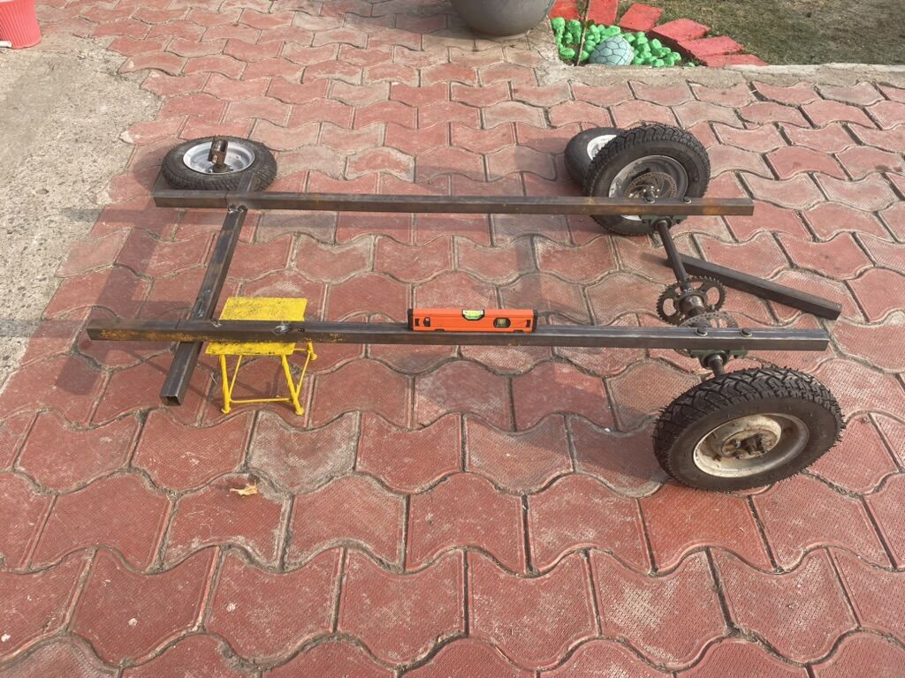
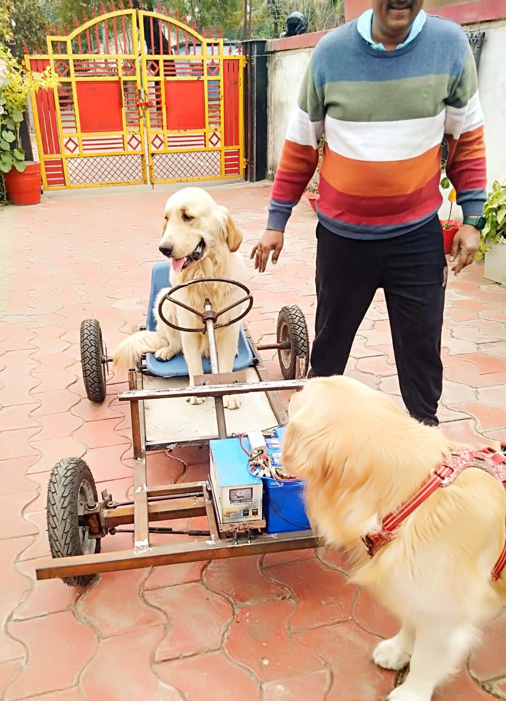
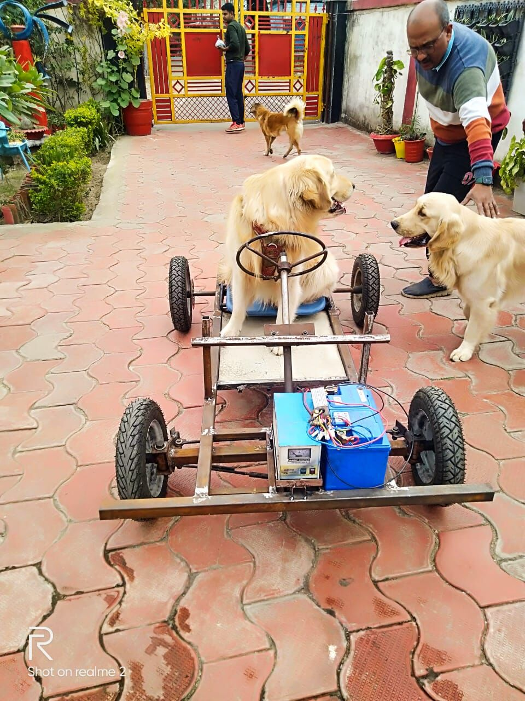
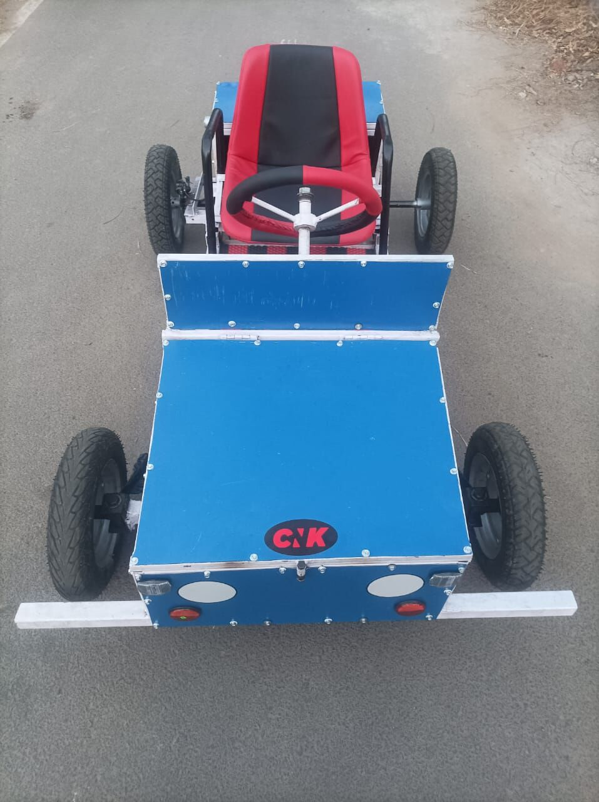
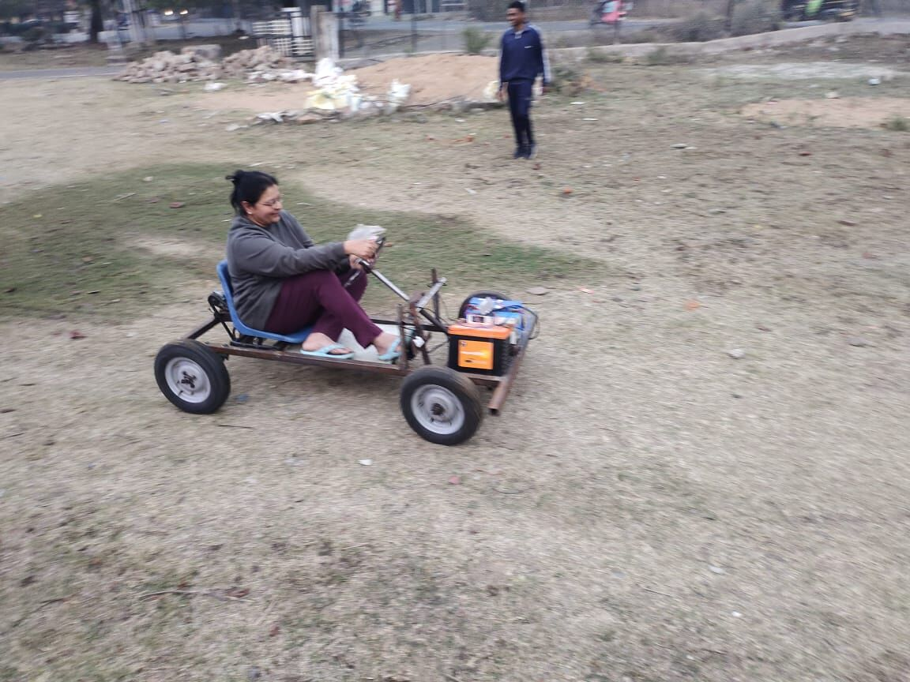
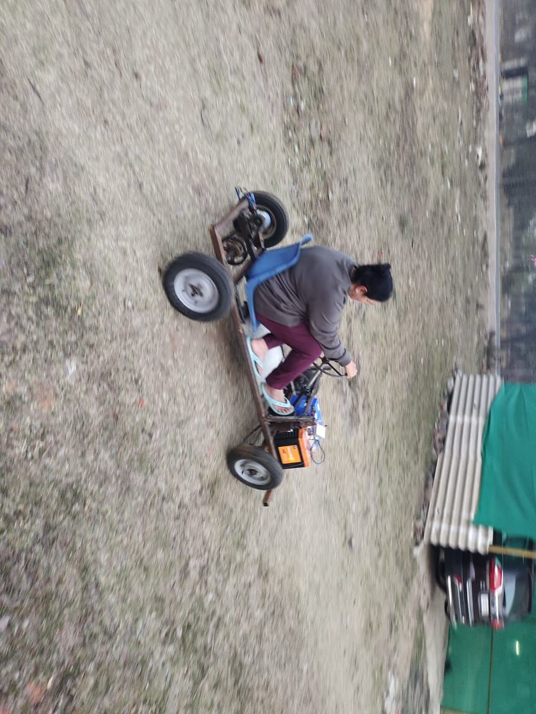
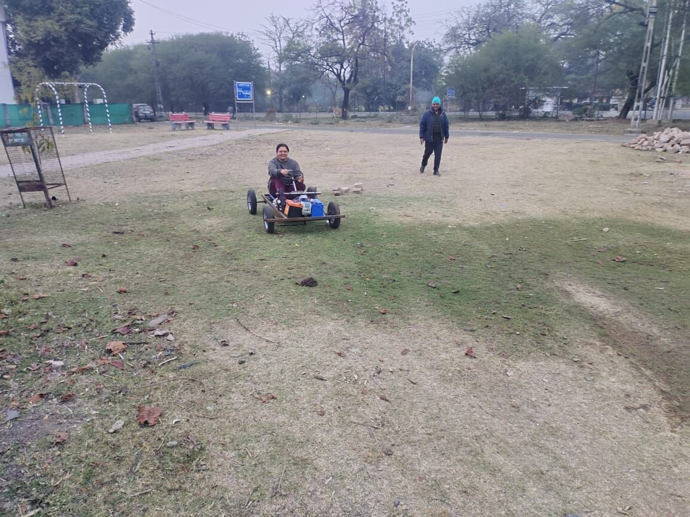

Bare frame
The kart started as a welded steel frame on four repurposed scooter wheels, with steering and a 24 V brushed DC drive laid out on the floor before anything was fixed.



Body and finish
A blue sheet-metal body, a race seat and my initials on the nose turned the frame into a kart people wanted to drive.

On track
Track-ready and tested hard. The build earned the Indian Army AWWA Award from Southern Command in 2024.


